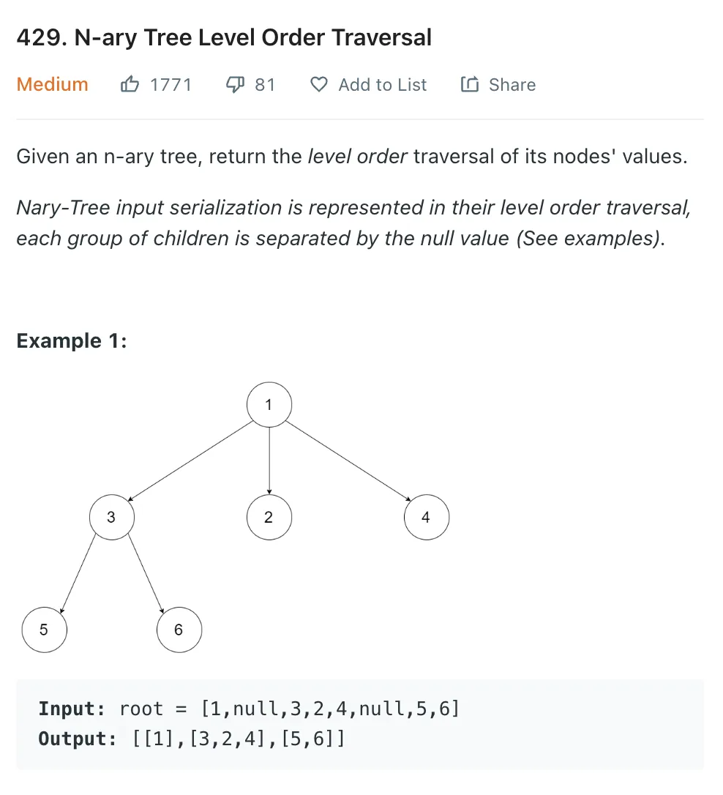
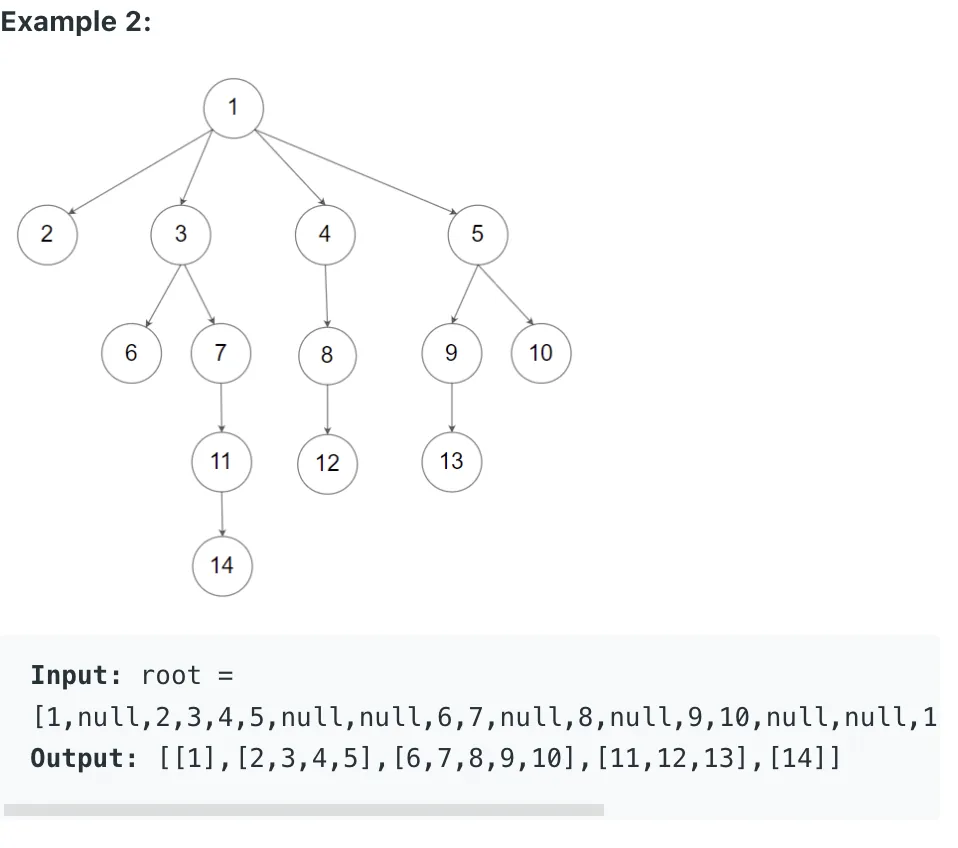

429. N-ary Tree Level Order Traversal
Question


✍🏽 My Solution
Runtime: 2 ms, faster than 92.21% of Java online submissions for N-ary Tree Level Order Traversal. Memory Usage: 43.2 MB, less than 91.41% of Java online submissions for N-ary Tree Level Order Traversal.
class Solution {
public List<List<Integer>> levelOrder(Node root) {
List<List<Integer>> result = new ArrayList<>();
if (root == null) return result;
Queue<Node> queue = new LinkedList<>();
queue.add(root);
while (!queue.isEmpty()) {
int levelNum = queue.size();
List<Integer> list = new ArrayList<>();
for (int i = 0; i < levelNum; i++) {
Node curNode = queue.poll();
list.add(curNode.val);
for (int j = 0; j < curNode.children.size(); j++) {
queue.add(curNode.children.get(j));
}
}
result.add(list);
}
return result;
}
}
🧠 Thought Process
- What is the time/space complexity of my solution? How do I know?
- time: O(n)
- space: O(n)
- What mistakes did I make?
- 忘了 遍歷要怎麼寫
- 忘了判斷root為null